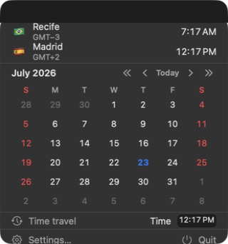

Menu bar clocks
One item per clock or every clock combined into one. Time only, leading item + time, or a tiny analog face.
A native menu bar app for macOS
Your team, your family, your next trip — every time zone you care about, one glance away. With a quick calendar and time travel built in.
Open source · Direct download · macOS 26 or later

Made for the Mac
One item per clock or every clock combined into one. Time only, leading item + time, or a tiny analog face.
Click the menu bar and see the month. Which weekday is the 15th? Answered.
Pick a day, type a time — every clock previews that exact moment. Close the panel and you're back to now.
Show the New York clock only during NY business hours. It hides itself the rest of the day.
Start with a useful preset, write any Unicode pattern, or assemble one visually with the Format Builder.
Updates align to the clock's real boundaries. Showing only hours? Meantime wakes about once an hour.
Native everywhere
Toolbar panes, grouped forms, live previews with explicit Save. Add clocks from a searchable catalog, reorder or remove them, label them, and choose a flag, emoji, text, or no leading item.
No accounts, no sync, no telemetry — the only network request is the update check against this repository.
Latest stable release
Drag to Applications, launch, done. Meantime keeps itself up to date.